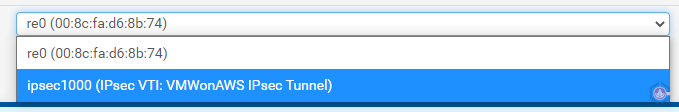

Configuring Route Based VPN Between VMware Cloud on AWS and pfSense
For certain tests and demos, I occasionally need to connect my home lab to our VMW on AWS SDDC. Since I can’t justify the cost of a Direct Connect port to my home lab my options are either route or policy-based VPN. Unless there’s a specific use-case for policy-based, route-based VPN (RBVPN) is definitely my preferred method.
Currently, I’m using a pfSense router/firewall for my home lab, which meant the first step was to select which BGP package I should install. At first, I was going to configure BGP using OpenBGPD as it seemed more common, but I decided to use FRR instead. The main reason was that at the time I was also studying for the NSX-V VCAP Deploy exam and wanted to be able to leverage both OSPF and BGP. Another reason was that it seems as though FRR is being recommended over OpenBGPD and Quagga OSPF as pfSense’s dynamic routing package of choice.
Planning and Pre-requisites
- There are certain values in a RBVPN that have to be identical in both sites and some that must be different for connectivity to work:
| Setting/Value | Description | Values I used |
|---|---|---|
| Local public IP | The public IP associated with the pfSense. If it’s behind a NAT, note the private IP as well | My public IP and 192.168.1.254 |
| Remote public IP | The VPN Public IP of the SDDC | |
| Local BGP ASN | The ASN that will be assigned to pfSense | 65025 |
| SDDC BGP ASN | The ASN that will be assigned to the SDDC’s BGP instance. Must be different than the local BGP ASN | 65001 |
| IPsec IKE version (for phase 1 and 2) | Select a setting that is supported by VMW on AWS. The setting must be identical in both sites for an IPsec session to establish | IKEv2 |
| IPsec encryption parameters (for phase 1 and 2) | Select values that are supported by VMW on AWS. Values must be identical in both sites for an IPsec session to establish | AES GCM 256, 128-bit key, SHA256, DH14 |
| Pre-shared key for IPsec | Will be used to authenticate the IPsec session between pfSense and the SDDC | Generated using pfSense |
| Local BGP IP | An IP in a network that will only be used to establish a BGP neighbor relationship between pfSense and the SDDC. Doesn’t need to be large or routable, preferably in the 169.254.0.0 range | 169.254.225.25/30 |
| SDDC BGP IP | An IP in the same subnet as the local BGP IP | 169.254.225.26/30 |
- Configure port forwarding (Optional) - If your pfSense is not directly connected to the internet you’ll need to enable port forwarding in your public-facing router/firewall and forward UDP port 4500 to your pfSense’s private IP
In VMW on AWS:
- Note the VPN public IP - In the SDDC you’d like to connect to, navigate to the Networking & Security section. The Overview tab should have the VPN Public IP listed:
- Note/change the VMW on AWS ASN - The default ASN is 65000. To validate or edit the ASN, within the Networking & Security section, navigate to VPN > Route Based. Click Edit Local ASN. You can now change the number to an ASN that is unique in your BGP environment. In this configuration I will use 65001.

In pfSense:
- Allow APIPA traffic (optional) - By default VMW on AWS allows RBVPN BGP sessions to be formed using the 169.254.0.0/16 range. pfSense drops that range by default. To configure pfSense to allow that range navigate to System > Advanced. Go to the Firewall & NAT tab and check Allow APIPA traffic. If APIPA traffic is not allowed the range that will be used for the BGP session should be permitted in the Compute Gateway firewall in VMW on AWS.
- Install FRR - FRR will add dynamic routing capabilities to pfSense using BGP and OSPF. To install FRR navigate to System > Package Manager and select the Available Packages tab. Search for FRR and click Install. Once the installation is finished successfully FRR will appear under Installed Packages.
pfSense configuration
Step 1 - Conigure IPsec Tunnel
- Navigate to VPN > IPsec and click Add P1
- Configure the following phase 1 settings (these settings will have to match when configured in VMW on AWS):
- Key Exchange version - IKEv1 or IKEv2. I selected IKEv2
- Interface - the WAN interface of your pfSense
- Remote Gateway - the VPN Public IP of the SDDC
- Pre-Shared Key - enter a shared key or generate one
- Encryption Algorithm - select encryption the desired values that are
supported by VMW on AWS. I selected the following:
- Algorithm - AES256-GCM
- Key length - 128
- Hash - SHA256
- DH Group - 14 (2048 bit)
- On the newly created IPsec tunnel, Click Show Phase 2 Entries and then Add P2
- Configure the following phase 2 settings:
- Mode - Routed (VTI)
- Local Network - Address (not Network!). Under Address enter the local BGP IP designated for pfSense. I used 169.254.225.25
- Remote Network - Address (not Network!). Under Address enter the remote BGP IP designated for VMWonAWS. I used 169.254.225.26
- Similar to the encryption configuration in Phase 1, select encryption values that are
supported by VMW on AWS. I selected similar values to the ones I set in Phase 1:
- Algorithm - AES256-GCM
- Key length - 128
- Hash - SHA256
- PFS Key Group - 14 (2048 bit)
- Validate both Phase 1 and Phase 2 configurations and click Apply Changes

Step 2 - Assign the IPsec interface. This step enables the IPsec tunnel created in the previous step as a virtual interface for pfSense, so it can be leveraged by FRR to establish a BGP connection.
- Navigate to Interfaces > Assignments
- At the bottom, under Available network ports, select the newly created IPsec tunnel and click Add

- The new interface is added as OPT#. In my case it was added as OPT4. Click the interface name
- Check Enable Interface and provide a Description to make it easier to identify the interface
- Click Save
Step 3 - Allow traffic via the IPsec interface. By default pfSense will block any traffic on newly added interfaces. For the BGP connection to establish and for traffic to flow several allow rules should be opened.
- Navigate to Firewall > Rules
- Select the IPsec interfaces
- Create inbound and outbound rules that will match the traffic you want to allow communicating over the RBVPN. Don’t forget to also enable the BGP communication between pfSense and the SDDC. For this scenario I’m going to allow all traffic
Step 4 - Configure FRR. Now that IPsec is configured on the pfSense side, we are ready to configure FRR and BGP.
- Navigate to Services > FRR Global/Zebra
- Check Enable FRR
- Set the Default Router ID. You can specify it individually per routing protocol. I set it to the pfSense’s BGP IP, 169.254.225.25
- Set a Master Password. This password is only used by FRRs internal daemons, so set it to whatever you want
- Click Save
Step 5 - Configure FRR’s BGP. Note that I’m not going into the (many) configuration options possible in BGP. This is just going to be a minimal setup to enable communication and route exchanges.
- Navigate to Services > FRR BGP
- Check Enable BGP Routing
- Set the Local AS to a value that is different than the AS in VMW on AWS. In my lab it is set to 65025
- Specify the Router ID if you’d like it to be different than the one specified in step 4
- Under Network Distribution, you can control what routes are advertised via BGP. Since I didn’t want all of my lab and home subnets to be advertised, I decided to specify the ones I wanted to use for testing purposes
- Click Save
Step 6 - Configure the SDDC’s Edge as a BGP neighbor. Similar to the previous step, there’s a lot of BGP options here, but I’m just going to cover the basic to establish connectivity.
- In the FRR BGP view, select the Neighbors tab and click Add
- Under Name/Address set the remote BGP IP of the SDDC. In my case it’s 169.254.225.26
- Set a Description to easily identify this neighbor
- Set the Remote AS to the ASN configured in VMW on AWS
- Click Save
VMW on AWS configuration
Step 7 - Configure RBVPN in VMW on AWS
- Navigate to Networking & Security > VPN. By default you should be in the Route Based tab
- Click Add VPN
- Configure the following in the top section:
- Name - Descriptive name to identify the VPN
- Local IP Address - Select the Public IP from the drop down list. Note: this cannot be changed later
- Remote Public IP Address - The public IP where the pfSense is reachable
- BGP Local IP/Prefix Length - Enter the SDDC’s BGP IP and prefex length. I used 169.254.225.26/30. Note: this cannot be changed later
- BGP Remote IP - Enter the pfSense BGP IP. I used 169.254.225.25. Note: this cannot be changed later
- BGP Neighbor ASN - Enter the ASN configured in pfSense. I used 65025
- Preshared Key - Enter the same pre-shared key entered in step 1
- Remote Private IP - If the pfSense is behind a NAT, enter the private IP of the pfSense. I used 192.168.1.254, which is the WAN interface
- Configure the following in the bottom section (all values should correlate to the IPsec config in step 1):
- IKE Encryption - Correlates to pfSense’s Phase 1 algorithm. I configured AES GCM 256
- IKE Digest Algorithm - Correlates to pfSense’s Phase 1 hash. I configured None, as this is required in VMWonAWS when using GCM
- IKE Type - Correlates to pfSense’s Phase 1 key exchange version. I configured IKE V2
- Diffie Hellman - Correlates to pfSense’s Phase 1 DH Group. I configured 14
- Tunnel Encryption - Correlates to pfSense’s Phase 2 algorithm. I configured AES GCM 256
- Tunnel Digest Algorithm - Correlates to pfSense’s Phase 2 hash. I configured None, as this is required in VMWonAWS when using GCM
- Perfect Forward Secrecy - Correlates to pfSense’s Phase 2 PFS. I set it to Enabled
- Click Save

Step 8 (Optional) - Allow the BGP IPs in the Gateway Firewall if a they are not in the 169.254.0.0/16 range
- Navigate to Networking & Security > Gateway Firewall. By default you should be in the Compute Gateway tab
- Click + Add Rule
- Make sure the Sources and Destination are the subnet/IPs that are used by both BGP interfaces. Under Applied To apply the rule only to the VPN Tunnel Interface
- Click Publish
Validate Connectivity
At this point the IPsec tunnels should be up and the BGP session should establish and extend routes. We can validate connectivity in VMWonAWS and in pfSense.
In VMW on AWS - navigate to Networking & Security > VPN. In the Route Based tab verify that both the Status and BGP Remote IP are showing a green circle. You can also expand the view and view the learned and advertised routes.
In pfSense - navigate to Status > FRR. In the BGP tab there are several places where you can validate the established connection. The main ones are:
- Under the BGP Routes you can view the learned routes
- BGP Neighbors will present a lot of information about the neighbor connection. The important thing is to make sure the BGP State is Established
Asaf Blubshtein
Cloud Customer Success Architect
My current role focuses on VMware Cloud on AWS. I spend the rest of my time with my wife, our two cats, my home-lab, and our espresso machine.